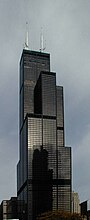
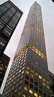
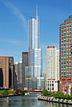

Willis Tower (do 2009 Sears Tower) – wieżowiec w centrum Chicago, w stanie Illinois.
Ma 108 pięter i 442,3 metry wysokości, co czyni go trzecim pod względem wysokości budynkiem w Ameryce Północnej.
Budynek został wybudowany w latach 1970–1973 kosztem 150 milionów dolarów dla korporacji handlowodetalicznej Sears.
Od momentu budowy do 15 lipca 2009 nosił nazwę Sears Tower. W marcu 2009 brytyjska firma Willis Group Holdings, Ltd.
wykupiła prawa do nazwy budynku. Formalnie nowa nazwa zaczęła obowiązywać 16 lipca 2009[1], jednak zmiana spotkała się z
powszechną dezaprobatą mieszkańców Chicago, którzy zamierzają używać oryginalnej nazwy. Przy jego budowie pracowało ponad
2400 robotników. Jego projektantami byli Bruce Graham i Fazlur Khan z firmy Skidmore, Owings and Merrill.
Willis/Sears Tower to budynek o unikatowej konstrukcji. Jego szkielet składa się z dziewięciu rur o kwadratowym
przekroju, które tworzą kwadratową podstawę budynku. Cała konstrukcja opiera się na betonowych fundamentach wpuszczonych
głęboko w skały znajdujące się pod ziemią. Dziewięć zespawanych razem rur wznosi się na wysokość 50 pięter, następnie budynek
zaczyna się zwężać. Do 66 piętra dochodzi 7 rur, do 90 pietra – 5 rur. Ostatnie 20 pięter to już tylko 2 rury. Dwie anteny telewizyjne,
ustawione na szczycie, sięgają 520 m.
W momencie ukończenia został najwyższym budynkiem świata (do linii dachu), odbierając ten tytuł World Trade Center. Stracił
go w roku 1997, kiedy to ukończono główną budowę Petronas Twin Towers w Kuala Lumpur, w Malezji. Jednak nawet wtedy Sears Tower miał najwyższy dach,
najwyżej położone używane piętro oraz najwyższą wysokość wliczając antenę (527 metrów). W momencie ukończenia Taipei 101 budynek utrzymał jedynie rekord
najwyższej wysokości wraz z anteną. Taipei 101 przejął rekordy najwyżej położonego dachu (448 m) i najwyższego używanego piętra (438m). Sears Tower był najwyższym
budynkiem w USA do 12 listopada 2013, gdy tytuł ten został przekazany One World Trade Center.

432 Park Avenue – wieżowiec znajdujący się na Manhattanie w Nowym Jorku.
Wieżowiec ma 96 pięter oraz 426 metrów wysokości do dachu. Budynek został zbudowany
bez iglicy. W 2011 roku budowa budynku została rozpoczęta, zaś w 2015 roku prace budowlane
zostały zakończone. W budynku znajdują się 104 apartamenty mieszkalne. Kilka pięter w budynku
pozostało otwartych, aby wzmocnić stabilność wieżowca i zredukować opór stawiany wiejącym wiatrom.

Trump International Hotel and Tower, znany także jako Trump Tower Chicago – wieżowiec
zaprojektowany przez Adriana Smitha znajdujący się w Chicago, w Stanach Zjednoczonych. Jego budowa rozpoczęła
się w 2005 roku. Budynek w 2008 roku osiągnął docelową wysokość 423,4 metrów. Konstrukcja została oddana do użytku w 2009 roku.
Trump Tower Chicago jest drugim co do wysokości wieżowcem w Chicago (po Willis Tower) i siódmym w Stanach Zjednoczonych.
Natomiast na liście najwyższych budynków na świecie znajduje się obecnie na 29 pozycji.
Wieżowiec posiada 98 kondygnacji. Powierzchnia całkowita wszystkich pomieszczeń wynosi 242 000 m².
Całkowity koszt budowy biurowca wyniósł 847 milionów dolarów (USD).
Właścicielem biurowca jest amerykański konglomerat The Trump Organization.